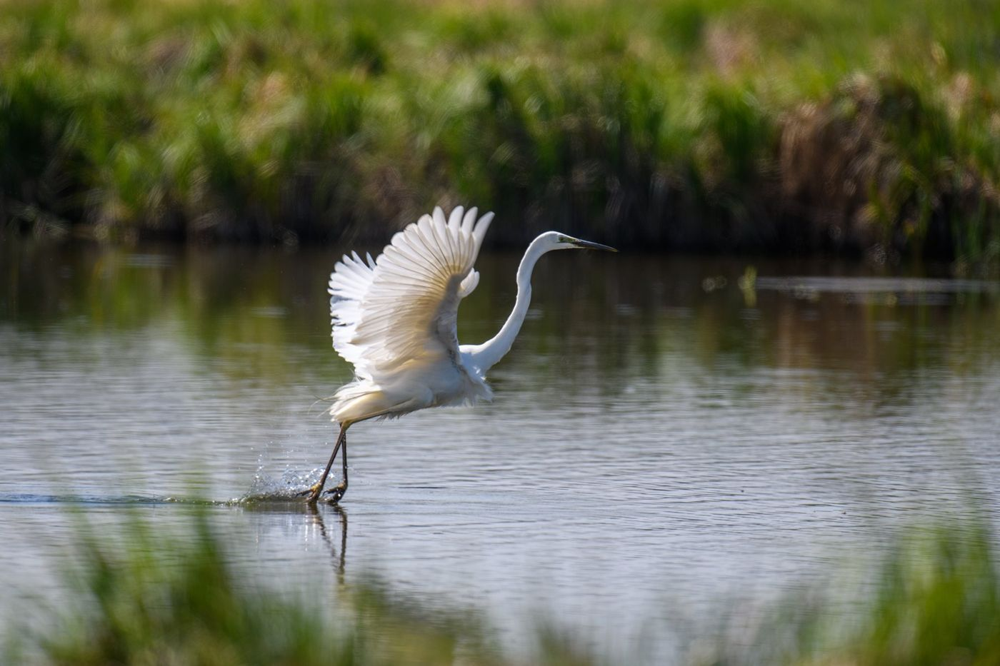

Marisol’s video plays here
“It’s just there, like it had been waiting.”
Marisol Reyes, ecologist
For sixty years, the Tillinghast marsh was a cow pasture behind a 1960s dike. Marisol walked it every spring anyway, counting what wasn’t there.
Three weeks after the crew breached the dike, she found juvenile salmon holding in the current of a channel that hadn’t carried seawater since before she was born.
There are more marshes still waiting.
Help bring back the next one.